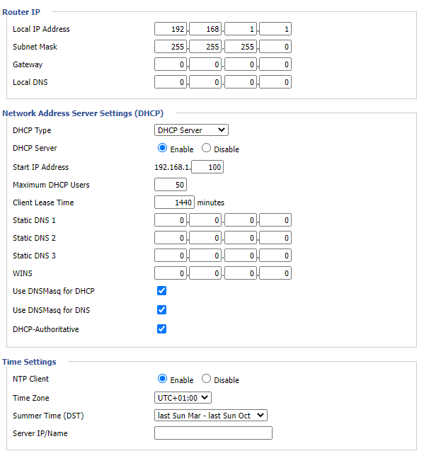

4.3. Seguridad¶
Los contenidos de este epígrafe estan incluidos en el epígrafe Redes inalámbricas de una de las unidades del módulo de Seguridad Informática.
4.4. Configuración¶
La configuración de dispositivos inalámbricos se puede dividir en tres aspectos:
La configuración de su función de encaminador (en caso de que sea un encaminador, claro).
La configuración de su función inalámbrica como punto de acceso.
Otra configuración adicional que dependerá de las capacidades del dispositivo (cortafuegos, calidad de servicio, etc.)
No hay modo de dar una receta general para llevar a cabo estas configuraciones, porque tal configuración dependerá del firmware que lleve instalado. Lo que sí es común a todos ellos es que dispongan de una interfaz web para realizar la configuración y, en el caso de algunos, de una CLI accesible a través de telnet o, más habitualmente, SSH. En cualquier caso, para ilustrar una configuración utilizaremos un dispositivo que tiene instalado DD-WRT <https://dd-wrt.com/> como firmware y lo haremos a través de un interfaz web.
Función de router
Básicamente hemos de indicar cómo configuraremos la WAN y la LAN. En este caso, por WAN se entiende la red externa, esto es, la red local a través de la cual el dispositivo alcanzará Internet, mientras que LAN es la red que el dispositvo conecta con el resto de la red local.
En lo referente a la WAN:

Hay que indicar cómo conectará el dispositivo con el resto de la red. Lo habitual es que, simplemente, se deje que obtenga una dirección automáticamente (DHCP), pero también podría interesarnos asignarle una dirección estática, en cuyo caso tendríamos que establecer todos los parámetros (IP, máscara, puerta de enlace, servidores DNS).
En lo referente a la LAN:
Lo habitual es que establezcamos:
Los parámetros estáticos de red dirección IP y máscara. No son necesarios puerta de enlace ni DNS, si configuramos la interfaz WAN dinámica, puesto que en ese caso esos dos datos ya nos los facilitará el servicio DHCP.
Si deseamos habilitar un servidor DHCP, que será lo habitual, y algunos parámetros al respecto (rango, máximas concesiones, tiempo de concesión). También se nos permite indicar qué servidores DNS se dirá a los clientes que pueden usar. Estos dispositivos también disponen de un proxy DNS, por lo que si no se especifican servidores DNS, será el propio dispositivo el que actúe como tal.
Advertencia
Que todo lo que hemos configurado tenga sentido, depende del modo en que se configure el dispositivo, que es justamente lo que se tratará a continuación.
Función de punto de acceso
Antes de nada, es necesario definir cómo actuará el dispositivo:

Lo habitual es que estos dispositivos actúen como AP (punto de acceso), que en este dispositivo significa generar una nueva red local (la LAN) en la que se encuentra la red wifi y hacer la función de router entre ella y la WAN.
Pero hay otras posibilidades que determinarán que el dispositivo se comporte de distinto manera:
- Client
que para este dispositivo significa recibir la señal de la WAN a través de la conexión inalámbrica y generar una LAN cableada. Si se desea no generar una nueva red, entonces debe usarse el modo Client bridge.
- Repeater
que extiende una red inalámbrica. Si se desea, no generar una red distinta debe usarse el modo Repeater bridge.
- WDS
que extiende una red inalámbrica replicando exactamente la señal del punto de acceso principal. Todos los parámetros deben ser idénticos, incluido el canal de difusión. Hay una guía de cómo configurarlo en esta entrada de blog.
Nota
La distinción ente Client y las otras dos alternativas es clara: la primera no genera una red wireless para sus clientes. En cambio, si la intención es generarla, si podríamos dudar qué es más adecuado. Este artículo de la web de DD-WRT puede resultarnos útil.
Advertencia
El modo en que funcione el router como punto de acceso determina la configuración adecuada para WAN y LAN
Una vez determinado el modo, aún habrá que configurar los parámetros característicos de la red wifi:

En especial:
El nombre de la red (SSID). Puede ocultarse deshabilitando Wireless SSID Broadcast.
El canal de difusión.
En cuanto al canal es conveniente tener claro cuál es el más adecuado y eso dependerá de qué canales estén usando otros puntos de acceso cercanos. El problema de los canales de 2,4GHz. es que se solapan bastante:
y ese solapamiento provoca interferencia. Debe, pues, seleccionarse aquel canal que presente menos solapamiento respecto a las redes wifi ya existentes.
Nota
El gráfico está tomado de este interesante artículo de redeszone.et sobre bandas de frecuencia.
Finalmente, debera escogerse cuál es la seguridad de la red wifi:

Las alternativas fundamentales son:
Ninguna, esto es, dejar la red abierta lo cual debería descartarse.
WEP, que también deberíamos descartar por motivos de seguridad. De hecho, es probable que otros dispositivos ni siquiera ofrezcan esta posibilidad.
WPA2 Personal, que se caracteriza por requerir una contraseña de acceso:
WPA2 Enterprise, que permitirá asociar el dispositivo a un servidor RADIUS para que se definan en él los usuarios a los que se permite el acceso:
Leyendo el epígrafe dedicado a la configuración de un servidor RADIUS es fácil saber cómo configurar esta opción.